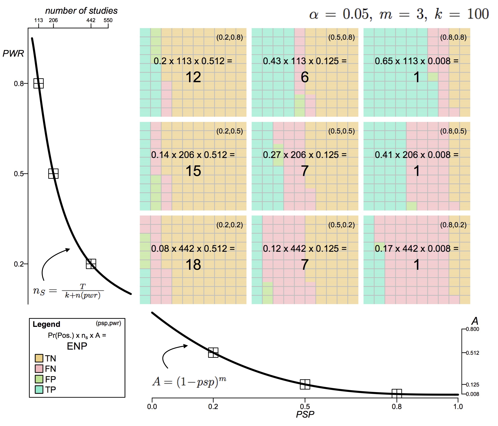
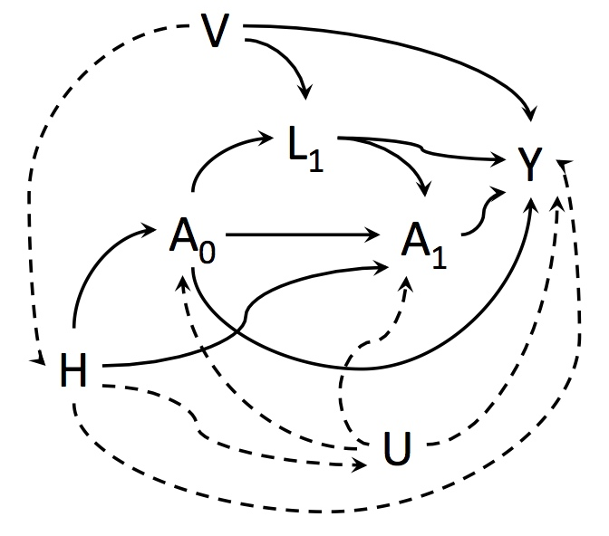
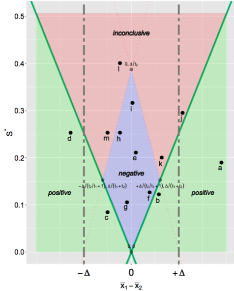
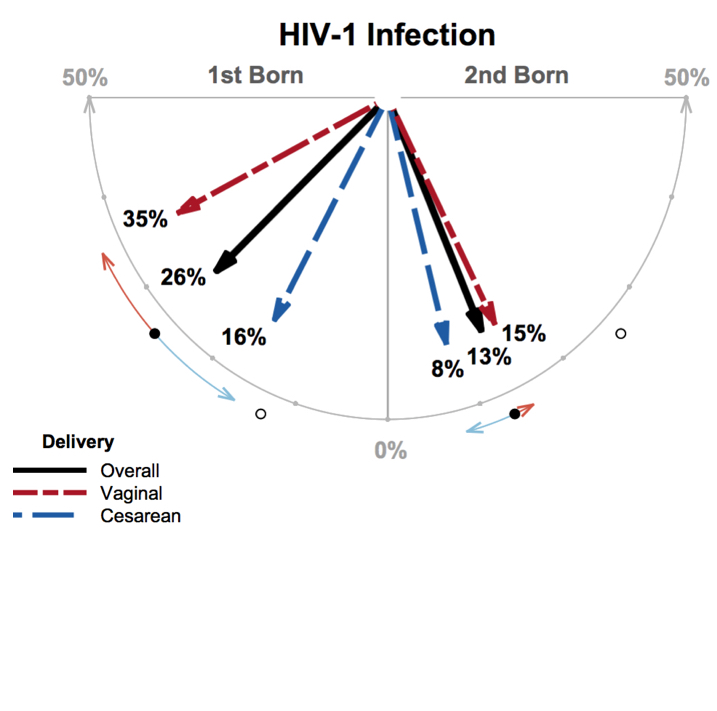
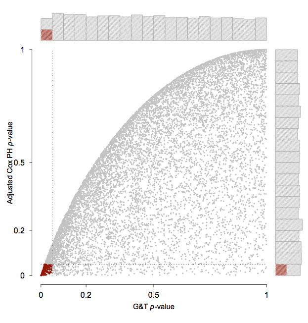
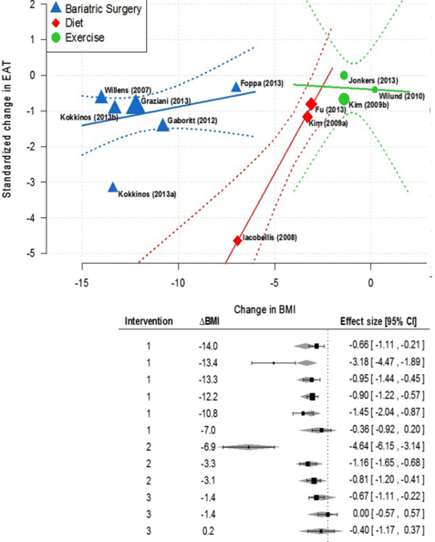

(All publications listed on Google Scholar Profile)

H Campbell and P Gustafson, The American Statistician, special issue on inference (2019).
In response to growing concern about the reliability and reproducibility of published science, researchers have proposed adopting measures of `greater statistical stringency,' including suggestions to require larger sample sizes and to lower the highly criticized "p<0.05" significance threshold. While pros and cons are vigorously debated, there has been little to no modeling of how adopting these measures might affect what type of science is published. In this paper, we develop a novel optimality model that, given current incentives to publish, predicts a researcher's most rational use of resources. Using this model, we investigate the merits of adopting measures of `greater statistical stringency' with the goal of informing the ongoing debate.
H Campbell, The Journal of Applied Statistics (2019).
When the outcome of interest is semicontinuous and collected longitudinally, efficient testing can be difficult. Daily rainfall data is an excellent example which we use to illustrate the various challenges. Even under the simplest scenario, the popular ‘two-part model’, which uses correlated random-effects to account for both the semicontinuous and longitudinal characteristics of the data, often requires prohibitively intensive numerical integration and difficult interpretation. Reducing data to binary (truncating continuous positive values to equal one), while relatively straightforward, leads to a potentially substantial loss in power. We propose an alternative: using a non-parametric rank test recently proposed for joint longitudinal survival data.

H Campbell and P Gustafson, Observational Studies (2018).
The fundamental obstacle of observational studies is that of unmeasured confounding. If all potential confounders are measured within the data, and treatment occurs at but a single time-point, conventional regression adjustment methods provide consistent estimates and allow for valid hypothesis testing in a relatively straightforward manner. However, in situations for which treatment occurs at several successive timepoints, another type of confounding is also problematic: time-dependent confounding may bias estimates and invalidate testing due to collider-stratification. While “causal inference methods” can adequately adjust for time-dependent confounding, these methods require strong and unverifiable assumptions. Alternatively, instrumental variable analysis can be used. This paper sheds light on the issues involved when considering the relative merits of these two approaches for the purpose of hypothesis testing in the presence of time-dependent confounding.

H Campbell and P Gustafson, PLoS ONE 13(4): e0195145 (2018).
We introduce a publication policy that incorporates “conditional equivalence testing” (CET), a two-stage testing scheme in which standard NHST is followed conditionally by testing for equivalence. The idea of CET is carefully considered as it has the potential to address recent concerns about reproducibility and the limited publication of null results. In this paper we detail the implementation of CET, investigate similarities with a Bayesian testing scheme, and outline the basis for how a scientific journal could proceed to reduce publication bias while remaining relevant.

H Campbell, JA Hanley, Journal of Statistical Education, 25.3 (2017): 131-136.
Because of their efficiency and ability to keep many other factors constant, twin studies have a special appeal for investigators. Just as with any teaching dataset, a “matched-sets” dataset used to illustrate a statistical model should be compelling, still relevant, and valid. Indeed, such a “model dataset” should meet the same tests for worthiness that news organization editors impose on their journalists: are the data new? Are they true? Do they matter? This article introduces and shares a twin dataset that meets, to a large extent, these criteria. This dataset was the basis of a clever study that confirmed an inspired hunch, changed the way pregnancies in HIV-positive mothers are managed, and led to reductions in the rates of maternal-to-child transmission of HIV.
Follow-up research:
The statistical joys—and added complications—of twin studies, Hanley (2018)

H Campbell and CB Dean, Statistics in Medicine, 33.6, (2014): 1042-1056.
For testing the efficacy of a treatment in a clinical trial with survival data, the Cox proportional hazards (PH) model is the well‐accepted, conventional tool. When using this model, one typically proceeds by confirming that the required PH assumption holds true. If the PH assumption fails to hold, there are many alternative models available. An important question which arises is whether the potential bias introduced by this sequential model fitting procedure merits concern and, if so, what are effective mechanisms for correction.
Follow-up research:
Testing Treatment Effect in Randomized Clinical Trials With Possible Nonproportional Hazards, Callegaro and Spiessens (2017)
Statistical power to detect violation of the proportional hazards assumption when using the Cox regression model, Austin (2017)

S Rabkin and H Campbell, Obesity Reviews, 16.5 (2015): 406-415.
The objectives of this meta-analysis were to determine whether epicardial fat (EAT) is subject to modification, and whether various strategies accomplish this end point and the relationship between weight loss and EAT. A systematic review of the literature following meta-analysis guidelines was conducted using the search strategy ‘epicardial fat’ OR ‘epicardial adipose tissue’ AND ‘diet’ OR ‘exercise’ OR ‘bariatric surgery (BS)’ OR ‘change in body weight’ limited to humans. Eleven articles were identified with 12 intervention approaches of which eight studies showed a statistically significant reduction in EAT. A random-effects meta-analysis suggests an overall significant reduction of 1.12 standardized units (95% CI = [-1.71, -0.54], P value < 0.01). While there is a large amount of heterogeneity across study groups, a substantial amount of this variability can be accounted for by considering intervention type and change in body mass index (BMI). These variables were incorporated into a random-effects meta-regression model.
Harlan Campbell, Paul Gustafson
Harlan Campbell, Daniel Lakens
MJ Jackson, JL Gow, MJ Evelyn, TJS McMahon, H Campbell, J Sheppard, TJ Howay, D Fladmark, A Thielman, The Canadian Entomologist, 145.06 (2013): 674-685.
Stormwater catch basins form part of artificial drainage systems in urban areas and can provide larval habitat for mosquito vector species of West Nile virus (WNv), such as Culex pipiens Linnaeus (Diptera: Culicidae). We evaluated the impact of management techniques and targeted applications of larvicide on larval populations of this potential WNv mosquito vector species in catch basins from the Lower Mainland of Vancouver and on Vancouver Island of British Columbia, Canada. A mixed effects logistic regression model was fit to the data and described the relationship between larval presence and larvicide treatment while controlling for other parameters. Parameter estimates showed that larvicide treatment reduced the odds of larvae presence and revealed relationships between larval presence and water temperature and adjacent land use but larvicide treatment consistently reduced the presence of larvae regardless of these other factors.